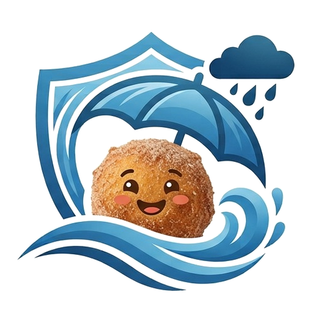

Força da água
15 cm de água em movimento derrubam uma pessoa; 50 cm arrastam um carro. A correnteza engana — parece pouco, mas basta um desequilíbrio para cair.

Bolinho de Chuva Sistema de Prevenção de Alagamentos
Deixa eu dar uma olhada no céu e nos córregos…
O Bolin avisa quando um temporal estiver chegando ou quando alguma região entrar em perigo de alagamento. Ele só escreve quando é importante, e você pode cancelar quando quiser.
Só o que fala de chuva, temporal, enchente e alagamento. Clique numa notícia para ler no site de origem.
Procurando notícias de chuva…
Cada círculo é uma região monitorada. Clique num círculo para ver os detalhes.
As regiões da cidade ainda usam dados de demonstração. Quando um sensor for instalado numa região, ela passa a mostrar a etiqueta “sensor”.
Carregando regiões…
Cada vez que uma região entra em atenção ou perigo, ou que começa a chover forte, o alerta aparece aqui. Ele fica ativo até a situação voltar ao normal.
Carregando alertas…
Um sensor ultrassônico mede a altura da água na maquete e manda a leitura para o site a cada poucos segundos.
Carregando o painel do sensor…
Dados meteorológicos ao vivo, atualizados a cada 5 minutos.
Carregando dados do clima…
15 cm de água em movimento já derrubam um adulto. Veja como cada risco acontece na prática.
15 cm de água em movimento derrubam uma pessoa; 50 cm arrastam um carro. A correnteza engana — parece pouco, mas basta um desequilíbrio para cair.
A água do alagamento se mistura com esgoto e lixo e é a principal via de contágio da leptospirose. Um pequeno corte na pele já vira porta de entrada.
Fios submersos podem eletrificar a água ao redor, sem nenhum sinal visível. A água conduz eletricidade muito bem.
Bueiros abertos e valas ficam escondidos debaixo da água turva. É comum alguém cair num buraco que não sabia que estava ali.
A cheia expulsa cobras, escorpiões e aranhas dos seus esconderijos, e eles procuram áreas secas por perto — inclusive casas.
O solo encharcado perde firmeza, e isso aumenta o risco de queda de muros, encostas e paredes de casas mais antigas.
A prevenção reduz o risco em cada etapa do alagamento.
Mande seu CEP por SMS para 40199 e a Defesa Civil avisa quando houver risco de chuva forte. É gratuito.
Guarde documentos e aparelhos elétricos em lugares altos.
Água, lanterna, remédios e documentos dentro de um saco plástico.
Saiba para onde ir e combine um ponto de encontro com a família — e não esqueça dos animais de estimação.
Nem a pé, nem de carro — a profundidade e a correnteza enganam.
Corte a chave geral se a água começar a entrar em casa.
Suba para andares superiores e aguarde o resgate em segurança.
Ir até a área alagada por curiosidade ocupa as vias e coloca você em risco.
Evite contato direto da pele com a lama e a água do alagamento.
Jogue fora tudo o que teve contato com a água do alagamento.
Pode ser leptospirose. Vá a um posto de saúde e conte que teve contato com a água.
Só volte a usar a casa depois de checar a parte elétrica e o encanamento.
Salve esses números. As ligações de emergência são gratuitas. No celular, toque no número para ligar.
Carregando contatos…
O Bolin é o mascote do Bolinho de Chuva. O nome vem daquele bolinho que todo mundo come em dia de chuva — e foi daí que veio a ideia: um sistema que avisa quando a chuva deixa de ser só um bom motivo para fritar bolinho e vira risco de alagamento.
Ele está sempre pronto para o tempo virar: capa de chuva azul, galochas nos pés e o guarda-chuva na mão, fechado, só esperando a primeira gota. E vive acenando — é o jeito dele de dizer que está de olho nos córregos de Ribeirão Preto e que você pode contar com ele.